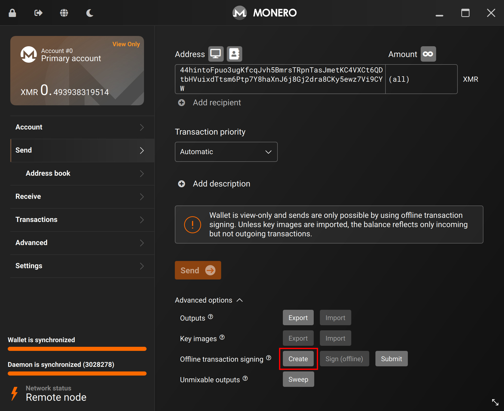

Malvarma is a cold wallet guide for Monero.
This guide hand-holds you through:
- Creating an air-gapped computer
- Creating a cold/view Monero wallet pair
- Creating, signing, and broadcasting a cold Monero transaction
The entire process can be finished anywhere from 1 hour to 1 day, depending on experience.
Continue to the first step by clicking > or selecting the next chapter: Before we start.
All chapters are viewable by clicking the top-left ☰ button.
⛔️ Before we start
This guide is meant to be read from front-to-back, in order.
There are steps that may not be applicable to you, if so, feel free to skip them.
At the end of this guide, you will be in possession of an air-gapped computer.
For the purposes of this guide, we focus on how to use that computer to create and sign offline Monero transactions, however, there are other practical usecases this computer could serve, e.g:
- Other offline cryptocurrency transaction signing
- Offline password vault (KeePassXC, Bitwarden, 1Password, etc)
- Offline OTP/2FA generation
- Offline PGP message signing
In short, this air-gapped computer is viable for storing any "secret" that would be better stored offline, and is not just limited to Monero.
What you need
- Computer (Laptop, Desktop, SBC, etc)
- Data transfer medium (USB, SD Card, etc)
- Screwdriver
This computer will never connect to the internet ever again, so make sure you okay with "sacrificing" it into a cold wallet.
You will also need a computer other than this cold computer to act as your view-only wallet (perhaps the computer you're using to read this guide?). The security of this computer does not matter as much, as it will not be able to spend any funds.
üíª This guide
This guide will assume you are using:
- A laptop as your computer
- Monero GUI as your wallet
- Windows as your OS
The instructions will differ with other types of computers/wallets/OS's, but they are mostly the same.
In our case - we'll be using the cheapest 2nd-hand laptop we could quickly find ($80).
What things mean
This guide can be used without reading this page, skip if desired.
Following this guide may be easier if you have basic knowledge of some things.
The following are simplified explanations of some important concepts related to cold wallets.
üå™ Air-gapped
An air-gapped device is a device that is isolated from any conventional network (internet, LAN, etc) via software and/or physical means.
Note that, while an air-gapped device is incapable of networking, it is still capable of 2-way data transfer via USB, SD Card, etc.
Hardware wallets such as the Trezor One do not have any software capabilities nor any physical circuitry that allow for network interfacing, thus it could be considered an air-gapped device. All data transfers (including firmware changes) occur via USB.
{kind=link}
Similarly, a computer lacking the physical hardware to network (WiFi/Bluetooth chip and/or Ethernet port) would also be considered air-gapped.
"Cold" is usually used as a synonym for air-gapped.
üîë Spend/View key
Monero wallets are made up of 4 keys:
- Private spend key
- Private view key
- Public spend key
- Public view key
What each of these are used for is not too important for the purposes of this guide.
The important thing to take away is that the private spend key is the only key that can spend funds.
When you create a "view-only" wallet in Monero, it is a wallet that has access to all keys except the private spend key, thus it cannot spend funds (but it can see incoming funds just fine).
‚ùÑÔ∏èüî• Cold/Hot wallet
A cold wallet is a wallet that employs the air-gapped techniques described above and is not connected to any network.
A hot wallet is a wallet that is connected to a network in some form or another.
✒️ Signing a transaction
When you send Monero, you are authorizing a transaction with your private spend key.
Like a check:
- You see who it is going to
- You see how much money is being sent
All that is left is for you (your wallet) to authorize the transaction by "signing" it.
Just like a check with a name and amount, a transaction can be created relatively easily - but without your signature it is not a "real" transaction.
üíΩ Key Images & Outputs
Again, what these things are is not too important for the purposes of this guide.
The important thing to take away is that the these two things (key images & outputs) are additional pieces of data that must be carried over from cold <-> view wallets in order for:
- The
coldwallet to see an updated balance - The
viewwallet to see outgoing funds
❄️ Cold wallet
The first step: prepare the computer to be a viable cold wallet, and then create the wallet itself.
This chapter lays out the instructions for:
- Correctly preparing your software
- Correctly preparing your hardware
- Creating your cold/view wallet pair for Monero
Prepare the software
In the next few steps we'll be taking our computer offline forever, so we'll be making sure that we have everything we need installed here, beforehand.
Most notably, we need wallet software - we'll be using Monero GUI in this guide.
Other wallets that support offline transactions can be used (e.g Monero CLI) however the steps may slightly differ.
üíæ Install
Make sure your wallet software is installed on your cold device.
If you are using the cold device for purposes in addition to Monero, you should make that software is installed as well.
If full disk encryption is desired, that step should be done before any of this as well (you cannot easily do this after the fact).
üîè Verify
While this last step is technically optional, you are strongly encouraged to verify your wallet's authenticity before usage.
There are steps specific to Monero GUI here. More details can be found on the downloads page.
Prepare the hardware
Now that all the software that you'll need is installed, this step will prepare the hardware such that it physically cannot connect to any network (at least, wirelessly).
If this step is not applicable to your hardware (Desktop, SBC, etc) you can skip this step, although be aware that your computer will still have the physical ability to create internet connections.
In that case, using a motherboard or SBC without an integrated WiFi and/or Bluetooth chip would be equivalent to this step.
üëã Goodbye, WiFi
We're going to be removing the WiFi/Bluetooth chip from the example laptop.
Be sure to turn off the laptop and unplug any power.
Most cheap laptops like this will have 9-12 screws on the back, yours may differ slightly, but in the end it's the same - unscrew the back cover and open it up.
After unscrewing, there are most likely plastic clips locking the back cover into place, so you will have to pry the cover open - don't be scared!
Almost all laptops like this have the same general internal structure.

Although, we are only interested in the WiFi/Bluetooth chip.
This is almost always a single, square-shaped chip - located in the top-left corner.
Most of these chips are produced by Intel.

There will be 2 unique-looking wires connected to the chip.

- Unplug the wires
- Unscrew the (usually single) screw holding the chip in place
- Simply pull out the chip

Now your device is physically incapable of making internet/bluetooth connections. 1
You can now close the back cover, and do whatever you want with the chip.
Congratulations, you now have an air-gapped laptop.
USB WiFi/Bluetooth adapters exist, your laptop may still have an ethernet port, etc - this is addressed in Physical security
Create the cold wallet
After booting your newly created air-gapped computer, you should confirm that it really cannot connect to any network before proceeding.
After confirming your machine is cold, we'll be going through the standard procedure of making a wallet with Monero GUI, just follow the steps.

When selecting a mode, be sure to select Advanced mode.
This must be selected to enable certain offline transaction functionality.

Now, create your new cold wallet.

Take note of where your wallet is being saved, we'll be looking here later.

You can temporarily write down your seed on paper, but consider reading Backup the cold wallet to see how to backup your wallet digitally.
The gist is that the seed should never see the internet or any other device unencrypted.

Optionally create a wallet password.
Depending on your threat model, a password may not be necessary as this computer will be offline forever. The likelihood of you losing this password may be higher than a successful attack occurring to an air-gapped machine.

When selecting a daemon, select Connect to a remote node and do not add anything.
This wallet is offline, so we'll never be starting a Monero node.

Confirm your wallet looks correct, then create!
Now, we have a cold wallet on a cold computer - this wallet must never leave this device (at least, unencrypted).
The QR Code and Monero address shown would be your cold wallets address.
This is the address you can send to people when you want to receive Monero (or, a secondary address via Create new address).
This wallet can sign transactions, however, since it is offline, it cannot actually send them to the Monero network to be processed. It cannot even create them in the first place.
To address this, let's continue to the next step: Create the view wallet.

Create the view wallet
Now that you've created your cold wallet, you're now going to create a corresponding view-only wallet. This wallet is linked to your cold wallet (same address), but it has some notable properties.
This view-only wallet can:
- See incoming transactions
- Create transactions
but is not allowed to sign transactions (aka, spend funds).
This view-only wallet can be placed on a "hot" machine, and you can be more relaxed with it, as it cannot spend funds.
In your cold wallet, goto:
- Settings
- Wallet
and click Create a view-only wallet.

Take note of where the new view-only wallet is saved.

Go to the location of where your view-only wallet is saved.
On Windows, by default it is:
C:\Users\COLD_COMPUTER\Documents\Monero\wallets\YOUR_WALLET\YOUR_WALLET_viewonly
Now, plug in your data transfer medium of choice (USB, SD Card, etc), and copy the view-only wallet over.
Only the view-only wallet.
There will be a normal file (malvarma_viewonly in the picture) and a corresponding .keys version, only the .keys version is required but you can copy both.

Stepping away from the cold computer - we're now switching over to your view-only computer (maybe the computer you're using to read this guide?)
Plug in your data transfer medium of choice, import the view-only wallet files.

The view-only wallet files should be placed where your Monero GUI looks for wallet files, again by default this is in:
C:\Users\HOT_COMPUTER\Documents\Monero\wallets\YOUR_WALLET
If you don't know where Monero GUI looks for wallet files, that's fine, it will allow you to select them.
Re-create the view-only wallet by selecting Open a wallet from file.
There's our view-only wallet, select it and open.

You now have a view-only wallet version of your cold wallet!
Make sure the address is the same as your cold wallet.
Note that in the top-left corner, a View Only marker appears.
From now on, if you're ever confused on which wallet we're dealing with in the guide, look for the View Only marker.
To view funds sent to this wallet, you'll be syncing this view-only wallet just like you would for a regular wallet.

Fast forward some amount of time.
We've received some funds, and we can see it after syncing the view-only wallet.
But, we can't spend it.
To address this, let's continue to the next chapter: Transactions.

üíµ Transactions
You've now:
- Created an air-gapped device
- Created a cold Monero wallet
- Created a
view-onlywallet - Have received funds
It's time to create, sign, and broadcast some transactions.
Create a transaction
From your view-only wallet, you can send Monero like normal, but instead of Send ->, you'll be using the Offline transaction signing feature.
Goto:
Sendtab- Advanced options
- Offline transaction signing
- Click
Submit

This will not send funds, as this view-only wallet is not allowed to do that.
It will however, create a unsigned transaction file - a file that only needs your cold wallet's signature to be ready to go.
Confirm the amount you're sending, who you're sending to and Save as file (you may be responsible for naming of the file and where it is saved).
Take note of where this file is saved.
Transfer this unsigned transaction file to your data transfer medium (USB, SD Card, etc).
We're now ready to Sign the transaction.

Sign the transaction
We'll be signing (authorizing) the transaction created in the previous step.
We're now back on the cold computer.
After plugging in your data transfer medium (USB, SD Card, etc) into your cold computer, goto:
Sendtab- Advanced options
- Offline transaction signing
- Click
Sign (offline)

Select the transaction file created in the last step.
In this example, the file is named cold_monero_transaction but in your case, it will be whatever you named it.

Confirm the details of this transaction.
There may be unknown addresses shown due to stealth addresses and change addresses but the address you are sending to should be specified.
In our case, we are indeed sending 0.49 XMR to 44hinto...15ZPHmK.
After signing (authorizing) the transaction, there will be _signed and _signed_keyImages versions of your transaction file.
The _signed file is a "ready-to-go" transaction that can be broadcasted and successfully accepted by the Monero network, like a signed check with a name and amount.
Copy both of these to your data transfer medium (USB, SD Card, etc) and move onto the next step, Broadcast the transaction.

Broadcast the transaction
We'll now be broadcasting our transaction we created in the previous step.
It is signed, thus the network knows that we "authorized" it, and will accept it like a normal transaction.
Back on the view-only wallet.
Goto:
Sendtab- Advanced options
- Offline transaction signing
- Click
Submit

Find the _signed version of your transaction on your data transfer medium, and select it.
If the signed_keyImages file is in the same folder, Monero GUI will automatically import that as well.
If it is not, you will have to manually use the:
Sendtab- Advanced options
- Key images
Import
feature to import the file. This is required.

The wallet has accepted the signed transaction file, and our money was successfully sent!
We can see in our view-only wallet that we've sent the money to 44hintoF...z7Vi9CYW.
Sometime later, the actual 44hintoF...z7Vi9CYW wallet will receive the money, as seen below.
Congratulations, you've successfully created, signed, and broadcasted a cold Monero transaction!
There's only 1 step left: Outputs.
Outputs
Your cold wallet is not connected to any network, so it cannot update its current balance automatically.
However, your view-only wallet at this point in the guide does know the true balance.
We'll be transferring the outputs file from our view-only wallet -> to our cold wallet.
This will update the cold wallet so that it knows how much Monero it actually has.
This is a required step - your cold wallet requires this information.
In your view-only wallet, goto:
Sendtab- Advanced options
- Outputs
- Click
Export
The output file will be saved in your location of choice.
You can save it directly to your data transfer medium (USB, SD Card, etc).

On the cold wallet, plug-in your data transfer medium, and goto:
Sendtab- Advanced options
- Outputs
- Click
Import
Here, select the output file you created in the last step.
After this is done, your cold wallet's balance will be updated and will be able to sign future transactions.
Consider deleting all the non-wallet files created up until this point (transaction, signed, key image, output) as they are no longer required.
End?
This is the end of the main part of the guide - everything beyond this is technically optional, although it's recommended to continue reading.
üî® Maintenance
This cold/view-only wallet setup will require some small maintenance over time.
The following steps will aid you through some common processes.
Upgrading the wallet
Sometimes, Monero goes through backwards-incompatible hard-fork upgrades.
Sometimes, wallets receive important security updates.
In both of these cases, you will need to upgrade your cold wallet software.
As your air-gapped machine cannot connect to any network, you'll be using the same method you have used throughout this guide to upgrade your cold wallet: the data transfer medium.
Go through the steps of Prepare the software again, this time, transferring the new wallet software to your data transfer medium, then that to your cold wallet.
Replace the wallet software, and now you have an updated cold wallet.
Restoring the cold wallet
If you are restoring your cold wallet on a new machine, you must follow the steps in Outputs once again, such that your cold wallet can see true amount of funds it can spend.
Simply re-follow the steps and your cold wallet will be ready to sign future transactions.
Restoring the view wallet
If you are restoring your view-only wallet on a new machine, you must import the Key images briefly mentioned in Broadcast the transaction once again, such that your view-only wallet can see the amount of funds it has already spent (thus, an updated balance).
In your cold wallet, goto:
Sendtab- Advanced options
- Key images
- Click
Export
You will be asked to pick a location to save this Key images file.
Transfer the Key images file to your data transfer medium.

After plugging in your data transfer medium into your view-only machine, goto:
Sendtab- Advanced options
- Key images
- Click
Import
and select the Key images file you just created.
Your view-only wallet should now see an updated balance.

⚠️ "Optional"
The following steps are technically optional.
However, you are strongly encouraged to follow them.
Not doing so may lead to the loss of your cold wallet and funds.
Backup the cold wallet
Following this guide, your cold wallet only exists on a single, physical machine.
This is risky - if that machine were to to fail, your cold wallet would be gone with it.
It is encouraged to backup your cold wallet in some type of way, whether this means saving your seed, or the file itself.
The many ways to do this are outside the scope of this guide, but they can easily be found by searching around.
Your seed/cold wallet should never leave your air-gapped computer unencrypted.
Use well-known and trusted encryption software to encrypt your wallet before transferring it to a machine connected to the internet or any other network. Even Monero wallets themselves have built-in password and encryption schemes, use them if needed.
Physical security
❌ Disable auto-run
Many OS's (including Windows, Ubuntu) have an "auto-run" feature enabled by default.
This allows data transfer devices such as USB & SD cards to automatically run executable files when plugged in.
There is relatively rare malware that can abuse this - in this guides case, it is one of the few remaining ways your air-gapped machine could be compromised.
This is usually as simple as unclicking a toggle box, see here for Windows and here for Ubuntu (or any Linux using GNOME).
üìù Configure the BIOS
Your air-gapped machine's BIOS most likely has options to disable some hardware components.
This is a much more practical way to "disable" hardware compared to physically ripping out an ethernet jack.
You can disable any I/O that will no longer be used, e.g Ethernet, other USB ports, etc.

üîê Disk encryption
At-rest disk encryption on your air-gapped machine defends against physical compromises (depending on your password/key's strength).
As suggested in Create the cold wallet, the likelihood of you losing the encryption password should be weighted against the likelihood of your machine actually being physically compromised, you most likely do not need this step, but if you do, you know who you are.
This step must be done before creating your air-gapped machine, before Prepare the software.
See here for Windows and here for Linux.
The process for Linux will differ slightly per distribution, but LUKS is the scheme used in most setups.
üîå Misc ports
Your air-gapped machine may or may not have usable USB ports (that USB WiFi dongles could be plugged into) and/or Ethernet ports.
Do not plug anything into them.
End
Congratulations on creating an air-gapped device and sending cold Monero üéâ
To send more transactions, repeat the steps in the Transactions chapter.
| Last updated | 2023-11-30 1701377764 |
| Monero GUI version | v0.18.3.1 bea3032df9b1fc59a7aa0a3489d583b389481cfe |
| Source | https://github.com/hinto-janai/malvarma |